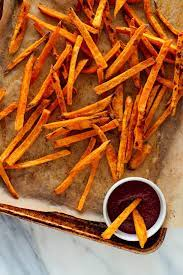

Yam Fries

Description
A healthy and delicious reciple with minimal ingredients! Perfect for getting a daily dose of veggies in.
Ingredients
- 1 sweet potato
- salt
- garlic powder
- paprika
- black pepper
- oil or cooking spray
Steps
- Preheat air fryer to 380F. Peel sweet potatoes then slice into even 1/4 inch sticks
- Toss with garlic powder, paprika, salt and black pepper
- Cook in 2-3 batches depending on the size of air fryer basket without overcrowding. 10 minutes recommended, turning half way.
- Serve with dipping sauce of choice